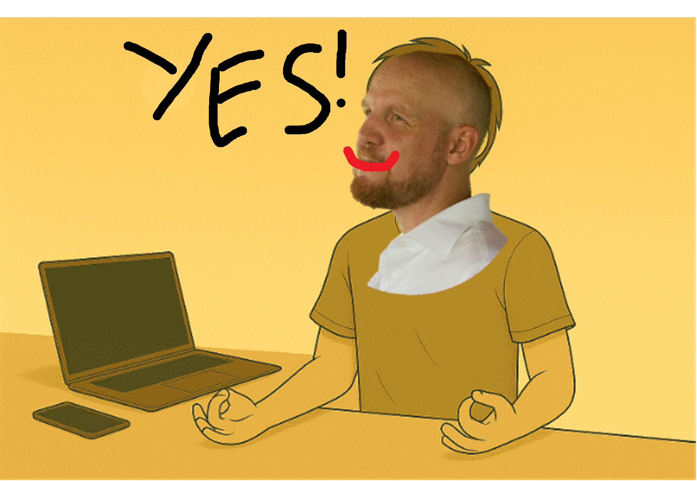
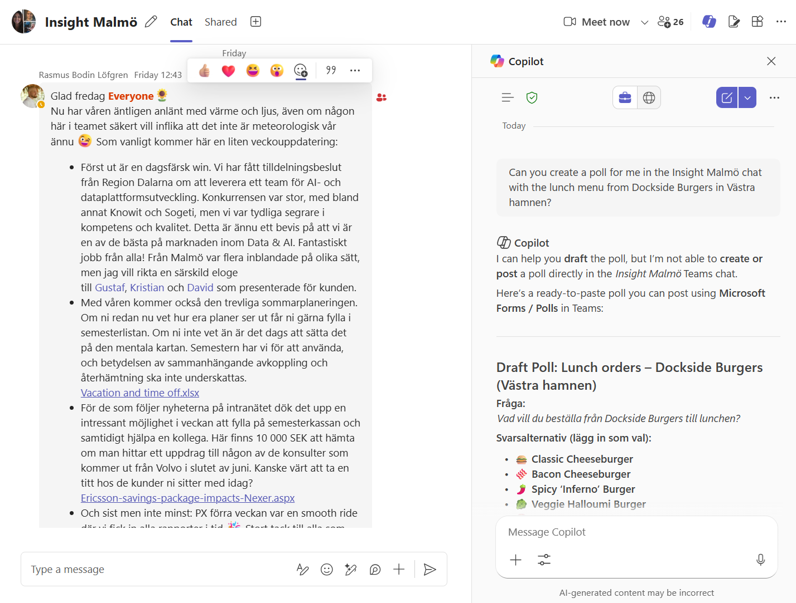
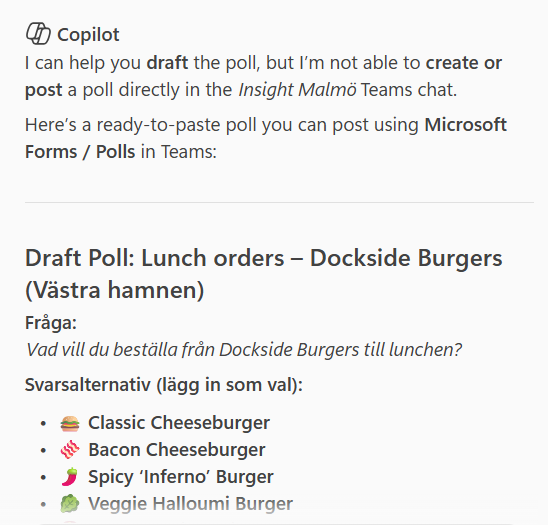
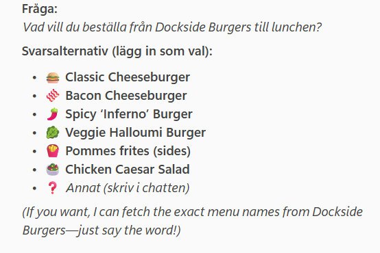
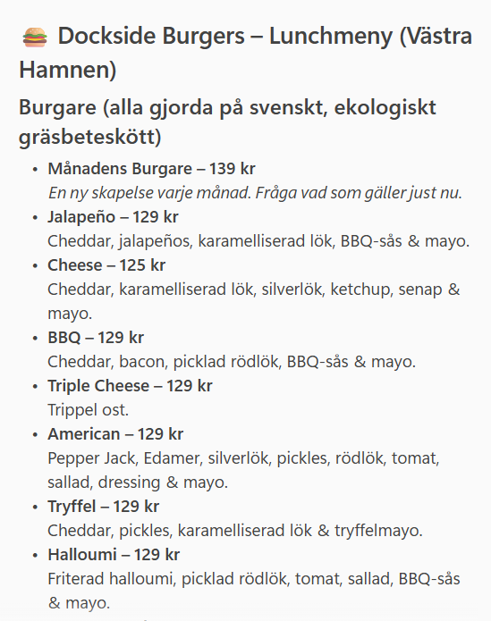
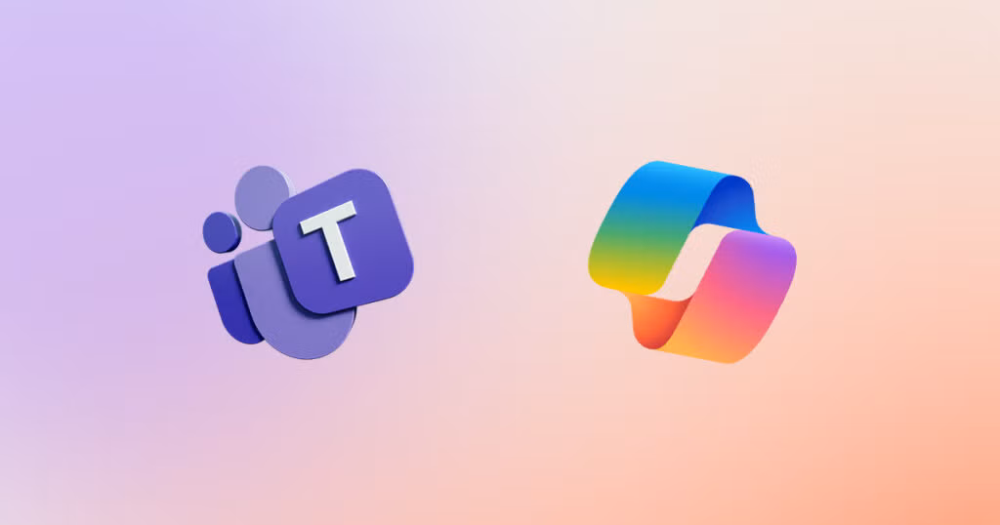

Nexer Insight
Lunch and Learn
Demo
MCP & Agentic Systems to make life easier
Author
Date
2026-03-10





The lunch menu has a smaller selection of burgers, and all go for 125 SEK.

The website menus are quite varied, for example,
Dockside’s menu is a PDF that updates monthly
Holy Greens’ menu is a javascript page that shows available options and prices per restaurant location
Reka’s Burgers menu is a static HTML page that hasn’t changed since last year
We could write custom scrapers for each restaurant, but that would be a lot of work, and would break easily if the website changes.
Follow along on Github at github.com/j-jayes/literate-broccoli
Let’s see the web app in action.
Search for a restaurant, review the menu, create a poll, and place orders — all powered by the agentic scraper.
Same MCP tool, different client.
The Copilot Studio agent calls the exact same scraper — proving the value of MCP: build once, connect everywhere.
flowchart TD
Start("Start URL or search") --> Fetch("Fetch page")
Fetch --> LLM("LLM reads page + links")
LLM -->|"extract"| Done("Return menu items")
LLM -->|"navigate"| Nav("Follow a link")
Nav --> Fetch
LLM -->|"search"| Search("Web search via Gemini")
Search --> Fetch
LLM -->|"fail"| Error("Raise error")
flowchart TD
A("Azure OpenAI") -->|"fails"| B("OpenAI")
B -->|"fails"| C("Google Gemini")
style A fill:#190878,color:#fff
If one provider is down or rate-limited, the next one picks up automatically.
Model Context Protocol is an open standard that lets any AI client call any tool through a shared interface — like USB-C for AI.
flowchart LR
H("AI App - Host") --> C("MCP Client")
C --> S("MCP Server")
S --> T("Tools")
S --> D("Data Sources")
from fastmcp import FastMCP
from src.tools.menu import get_restaurant_menu
mcp = FastMCP("lunch-menu-poll")
@mcp.tool
async def get_menu_poll(
restaurant_name: str,
menu_url: str = "",
) -> dict:
"""Fetch a restaurant's menu and
return an Adaptive Card poll."""
return await get_restaurant_menu(
restaurant_name,
menu_url=menu_url or None,
)
app = mcp.http_app()23.5k GitHub stars
70% of MCP servers use FastMCP
flowchart LR
F("Your Python Function") --> D("@mcp.tool")
D --> S("JSON Schema from type hints")
D --> V("Input validation via Pydantic")
D --> Doc("Tool description from docstring")
D --> T("HTTP + stdio transport")
style D fill:#190878,color:#fff
Called by: your frontend code
Same function, same types, same docstring — but now any AI app can discover and call it.
flowchart TB
subgraph Consumers
CS("Copilot Studio")
TB("Teams Bot")
WA("Web App")
end
subgraph MCP
Tool("get_menu_poll")
end
subgraph Scraper
Browse("browse_and_extract")
Extract("extract_menu")
Models("Pydantic models")
end
CS --> Tool
TB --> Tool
WA --> Tool
Tool --> Browse
Browse --> Extract
Extract --> Models
# Stage 1: Build React frontend
FROM node:20-alpine AS frontend-build
COPY lunch-web-app/frontend/ ./
RUN npm ci && npm run build
# Stage 2: Python backend + static files
FROM python:3.12-slim
COPY requirements.txt ./
RUN pip install -r requirements.txt
COPY src/ ./src/
COPY lunch-web-app/backend/ ./backend/
COPY --from=frontend-build /dist ./frontend/dist
CMD ["uvicorn", "backend.main:app",
"--host", "0.0.0.0", "--port", "8000"]Agency Let LLMs navigate, not just parse
MCP Build once, connect everywhere
Pydantic Structured outputs you can trust
Follow along on Github at github.com/j-jayes/literate-broccoli
Built with FastMCP, FastAPI, and React.
flowchart LR
U("User") --> CS("Copilot Studio")
CS --> MCP("MCP Scraper")
CS -.->|"Cannot"| GP("Group Poll")
style GP stroke:#ff5028,stroke-dasharray: 5 5
flowchart LR
CS("Copilot Studio") --> S("MCP Scraper")
TB("Teams Bot") --> S
WA("Web App") --> S
style S fill:#190878,color:#fff
The Teams bot is not yet IT-approved — so today we demo the web app. But the scraper powering all three is identical.
NEXER